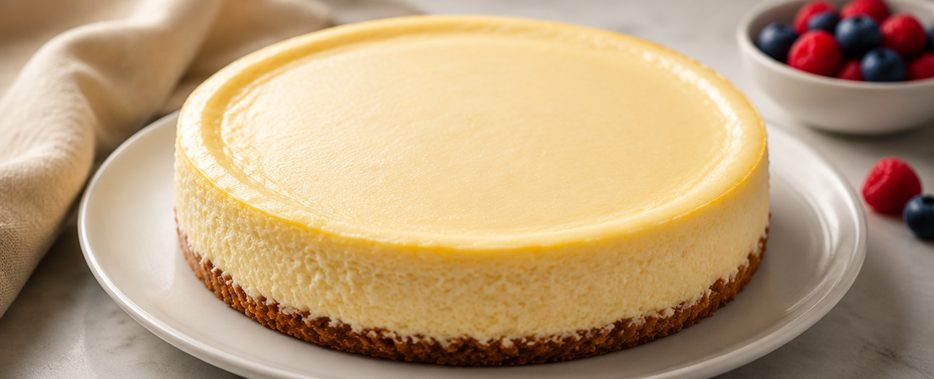

Whole cheesecakes, brownies, cookies, and cakes, baked to order from scratch and picked up fresh. Serving the 804, Northern Virginia, and the DC/Maryland area.

Five core flavors, a rotating seasonal cheesecake, and a small lineup of brownies, cookies, and cakes.
Real words from real customers — swap these in as they come in, Todd.
"Best cheesecake I've had outside of a restaurant, honestly. The cherry topping is unreal."
— add a customer name
"Ordered a large round for a birthday and it was gone in ten minutes. Already asked about the holiday flavor."
— add a customer name
"Easy pickup, super friendly, and the brownies didn't last the car ride home."
— add a customer name